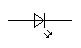
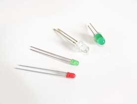
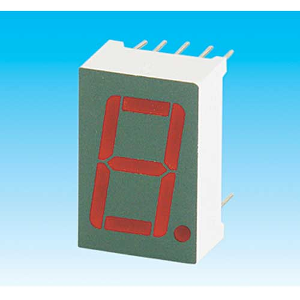

El LED (Light Emitting Diode) es un dispositivo fabricado con un material semiconductor (ni conductor ni aislante), que puede emitir luz de diferentes colores: amarilla, roja, verde, blanca, naranja, infrarroja, ultravioleta, etc.
La tensión de funcionamiento de cada LED depende de la luz que emita, aunque oscila entre 1,6 y 3 voltios.

El LED se emplea en señalización luminosa, televisores, monitores, smartphones, etc.
Combinaciones adecuadas de ledes nos permitirán , por ejemplo, presentar datos.
Combinaciones adecuadas de ledes nos permitirán , por ejemplo, presentar datos.
Un ejemplo es el visualizador o display de siete segmentos utilizado en las calculadoras o en los marcadores electrónicos.